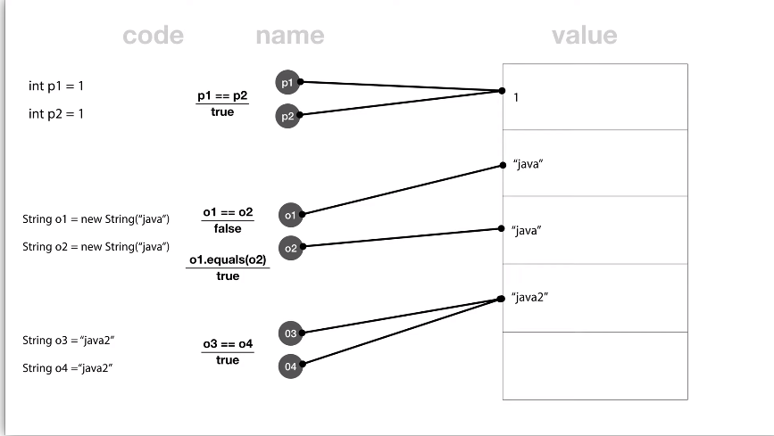

JAVA 제어문
JAVA 제어문-첫째 날[21.01.04]
진도: ~종합응용과 수업을 마치며까지
제어문(조건문, 반복문)은 기본적으로 C언어와 유사!
ex) if(a<2)
비교 연산자 == 대신에 equals 사용 가능! BUT 차이점 알아야!

- 일반적인 방법으로 변수 정의 내렸을 경우
: 만약 두 변수가 같은 값을 가진다면 같은 주소를 가리키는 것으로 생각됨. 따라서 == 맞음! - new를 통해 변수 정의 내렸을 경우
: new로 변수 정의를 내린다면 같은 값을 가져도 다른 주소를 가리키기 때문에 == 성립 불가. 그러나 값은 같기 때문에 equals 메소드는 True 값 반환!
-> 즉 비교 연산자 ==는 같은 주소를 가리킬 때 True 성립! equals 메소드는 주소가 다르더라도 값이 같으면 True 반환!
eclipse 에서의 주석 처리
ctrl+/ (이런 작은 단축키들이 모여 빠른 코드 작성을 만들지만, 나는 익숙하지가 않아 기록해둔다ㅜ)
반복문(while, for문)도 C언어와 사용법 동일
a++; 과 같은 문법 또한 동일하다. 다른 점은 없을까?
배열- 이건 좀 C와 다르다!
- 배열 선언-기본
ex) String[] users=new String[3]; - 배열 선언-하드 코딩
ex) int[] scores={10,100,1000};
이렇게 해서 JAVA의 기본적인 제어문까지 배웠다! 왜 다들 언어 공부할 때 Python->C->JAVA 순으로 하라고 하는지 알 것 같다. 진짜 파이썬을 배워두면 C가 훨씬 쉽고 C를 배워두면 JAVA가 훨씬 쉬워지는 것 같다. 아직 JAVA를 많이 배운 건 아니지만 뒷 부분 가면 객체 지향 프로그래밍에 대해서 배울 것 같은데 그 부분은 또 Python과 유사하지 않을까 싶다!